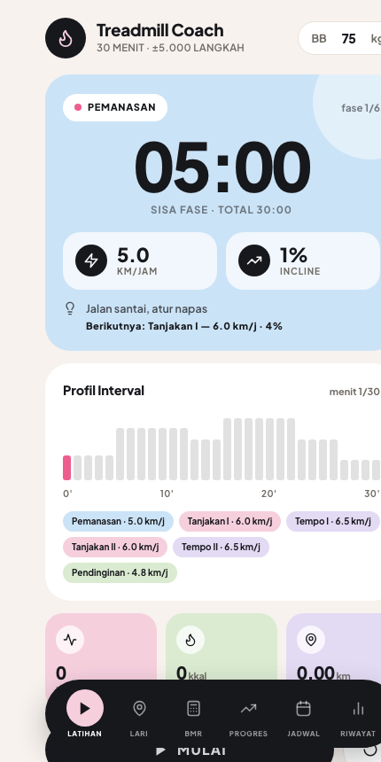
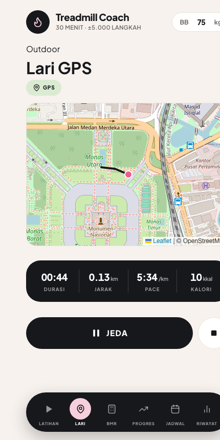
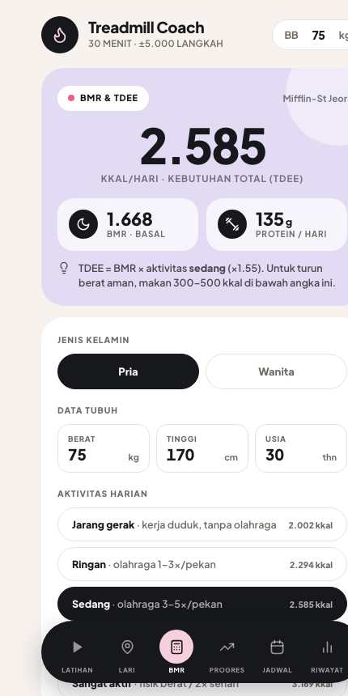

Treadmill Coach adalah pelatih treadmill & diet coach AI dalam genggaman — program latihan 30 menit terarah, estimasi kalori masakan Indonesia cukup dari foto, GPS lari outdoor, dan kalkulator kebutuhan kalori harian.



Potret nasi padang, soto, atau menu apa pun — AI mengenali makanannya dan mengestimasi kalori + protein, dikalibrasi untuk masakan Indonesia.
ANDALAN6 fase interval dengan target kecepatan & incline yang jelas, bunyi otomatis tiap ganti fase, dan estimasi ±5.000 langkah per sesi.
Rute tergambar live di peta, lengkap dengan jarak, pace, kalori, dan riwayat aktivitas yang bisa dilihat ulang.
Tahu persis kebutuhan kalori harianmu (Mifflin-St Jeor), target defisit untuk turun berat, dan target protein.
Grafik tren berat badan, catatan kalori & protein harian vs target, dan streak pekan latihanmu.
Bisa dipasang ke home screen seperti aplikasi biasa, jalan tanpa internet, dan datamu tersimpan di HP-mu sendiri.
Ya, semua fitur bisa dipakai gratis saat ini. Kalau responsnya bagus, ke depan akan ada versi Pro dengan sinkronisasi akun & kuota foto lebih besar — pengguna awal akan dapat harga spesial.
Semua data (berat badan, sesi latihan, catatan makan) tersimpan di HP kamu sendiri, bukan di server. Tidak ada pendaftaran akun, tidak ada data yang dikirim ke pihak lain.
Setelah dibuka sekali, aplikasi jalan offline. Internet hanya diperlukan untuk fitur foto makanan (AI) dan memuat peta.
Estimasi AI dari foto adalah perkiraan porsi visual — cukup akurat untuk tracking harian, tapi bukan pengganti timbangan makanan untuk kebutuhan medis.